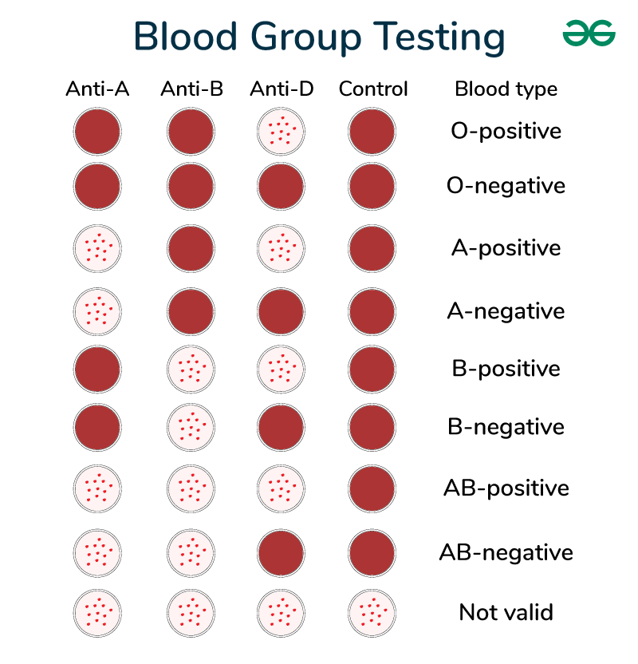

At first,we should know about the blood groups clearly .Then we will try to answer some of the common questions about donating blood.We hope these will be little helpful.This is a compatibility chart of Blood Groups:
| Blood Type | Gives | Recieves |
|---|---|---|
| A+ | A+,AB+ | A+,A-,O+,O- |
| O+ | O+,A+,B+,AB+ | O+,O- |
| B+ | B+,AB+ | B+,B-,O+,O- |
| AB+ | AB+ | Everyone |
| A- | A+,A-,AB+,AB- | A-,O- |
| O- | Everyone | O- |
| B- | B+,B-,AB+,AB- | B-,O- |
| AB- | AB+,AB- | AB-,A-,B-,O- |
Now learn a little about the blood group testing method :
We all should be aware of our blood groups. It plays a very important role when it comes to having a blood transfusion. Knowing our blood group helps us to select appropriate blood for transfusion either during any emergencies or accidents.
A human blood cell includes red blood cells, white blood cells, and platelets. All these blood cells play a significant role in transportation, protection and regulation. Blood groups are mainly determined by the presence or absence of antigens and antibodies on the surface of our red blood cells or erythrocytes. The blood transfusion from the wrong blood group can be life-threatening.
The four major blood groups are: A, B, AB and O. The blood grouping system was discovered in the year 1901 by Karl Landsteiner- an Austrian biologist and immunologist.
- 1.Why should people donate blood?
- - Safe blood saves lives. Blood is needed by women with complications during pregnancy and childbirth, children with severe anaemia, often resulting from malaria or malnutrition, accident victims and surgical and cancer patients. There is a constant need for a regular supply of blood because it can be stored only for a limited period of time before use. Regular blood donation by a sufficient number of healthy people is needed to ensure that blood will always be available whenever and wherever it is needed. Blood is the most precious gift that anyone can give to another person, the gift of life. A decision to donate your blood can save a life, or even several if your blood is separated into its components : red cells, platelets and plasma which can be used individually for patients with specific conditions.
- 2.What happens when I give blood?
- - Whether you are a first-time or regular donor, the blood service must make sure that you will come to no harm by donating blood. This includes checking your blood to be sure it will be safe for the person who receives it. Before you give blood, you will be asked questions about your medical history, including any medication you are taking, and about your current health and lifestyle. You may also be asked about recent travel; for example, if you live in a country where there is no malaria, you may be asked whether you have recently visited a tropical country. These questions will be asked only to safeguard your own health and the health of the person receiving your blood. You will be told whether you are eligible to give blood and, if not, whether you may be able to donate blood in the future. Any personal information that you give will be kept confidential and will not be used for any other purpose. It is very important to be truthful about any reasons why your blood might not be suitable. Although blood is always tested for infections that can be transmitted by transfusion, such as HIV, hepatitis B and C, and syphilis, a test may not be able to detect a very recent infection. This means that even though the blood may test negative for a particular infection, it might still infect a patient receiving a blood transfusion. After answering the questions you will also be given a brief medical examination that may include checking your pulse and blood pressure and ensuring that your weight meets a certain minimum. A drop of blood will then be taken from your fingertip to check that giving blood will not make you anaemic. Your health is very important to the blood transfusion service and blood will not be taken unless you can safely give a donation that day. Donating blood is very simple. You will be made as comfortable as possible, usually in a special chair or on a bed. The area inside one of your elbows will be cleaned with an antiseptic solution before a trained health worker inserts a sterile needle, connected to a blood collection bag, into your vein. It usually takes about 10 minutes to donate blood. After resting for 10 or 15 minutes and taking some refreshment, you will be able to return to your normal activities, although you should avoid strenuous activity for the rest of the day. You should drink plenty of fluids over the next 24 hours.
- 3.How much blood will be taken?Will I have enough?
- - In most countries, the volume of blood taken is 450 millilitres, less than 10 per cent of your total blood volume (the average adult has 4.5 to 5 litres of blood). In some countries, a smaller volume is taken. Your body will replace the lost fluid within about 36 hours.
- 4.Is giving blood safe?
- - Yes. Remember that you will only be accepted as a blood donor if you are fit and well. Your health and well-being are very important to the blood service. The needle and blood bag used to collect blood come in a sterile pack that cannot be reused, so the process is made as safe as possible.
- 5.Does it hurt?
- - Just squeeze the inside of your elbow tightly and you will get a quick idea of what the needle feels like. All you should feel is a gentle pressure and a momentary “pinprick” sensation. Blood donation is very safe and discomfort or problem during or after donating is very uncommon.
- 6.Who can give blood?And how often?
- - The criteria for donor selection varies from country to country, but blood can be donated by most people who are healthy and do not have an infection that can be transmitted through their blood. The age at which people are eligible to give blood varies, but is commonly between the ages of 17 and 65. Some countries accept donations from people from the age of 16 and extend the upper age limit beyond 65 years. Healthy adults can give blood regularly – at least twice a year. Your local blood service can tell you how frequently you can give blood.
- 7.Who should not give blood?
-
- The blood service is concerned with the welfare of both the
blood donor and the recipient (patient). Donors are often asked
not to donate blood for a period of time in the interests of their
safety and/or that of the blood supply. You should not give blood
if your own health might suffer as a result. The first concern of
the blood service is to ensure that blood donation does no harm to
the blood donor. You should not donate blood if:
- You are feeling unwell
- You are anaemic
- You are pregnant, have been pregnant within the last year or are breastfeeding
- You have certain medical conditions, which might make you an unsuitable donor
- You are taking certain medications, such as antibiotics.
- You have or may recently have contracted a sexually transmitted disease, such as HIV or syphilis, that can be passed on to a patient who receives your blood
- Your lifestyle puts you at risk of contracting an infection that can be transmitted through your blood: for example, if you have more than one sexual partner or have sexual contact with prostitutes
- You have ever injected recreational, non-medicinal drugs
- You have recently had a tattoo, skin scarification or ear or body piercing – your local blood service can tell you how long you must wait before giving blood
- You have had sexual contact with anyone in the above categories.
- 8.Can I give blood after vaccination against SARS-CoV-2?
- - Consistent with current general global practice, recipients of SARS-CoV-2 vaccines that do not contain live virus may donate blood if they feel well. As SARS-CoV-2 vaccines have been developed only recently, in settings where deferrals would not compromise blood supply availability, the National Blood Transfusion Service may consider implementing a precautionary deferral period of up to seven days to minimize the impact of call-backs from donors who develop symptoms subsequent to donating soon after vaccination. Recipients of live virus vaccines (e.g., virus vector based or live-attenuated virus vaccines) should be deferred for four weeks, consistent with current practices. Persons who feel unwell after receiving a SARS-CoV-2 vaccine should be deferred for seven days after complete resolution of symptoms, or as specified after receipt of a virus vector-based or live-attenuated vaccine, whichever is the longer period. In situations where it cannot be established whether the donor received a live virus vaccine, a four-week deferral period should be applied. For more detailed information, please refer to: Maintaining a safe and adequate blood supply and collecting convalescent plasma in the context of the COVID-19 pandemic (Interim guidance) (17 February 2021): Learn more
- 9.How will I feel after giving blood?
- - You should feel great for selflessly giving someone the gift of blood.